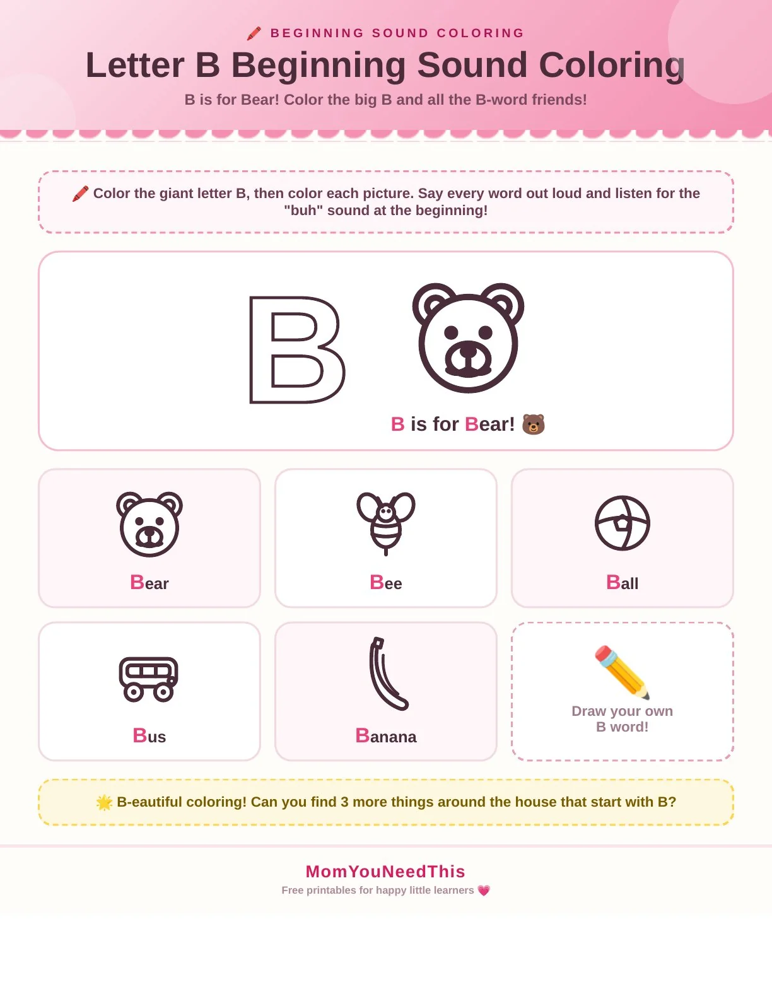

Letter B Beginning Sound Coloring Color Pictures That Begin With The B Sound
Help your little learner practise hearing the beginning sound in words while enjoying a fun coloring activity featuring words that begin with the letter B.
Quick Answer
Coloring with a rule: only the pictures whose names open with the lip-popping /b/ — bear, ball, banana — earn their color, and the rest stay white. Every picture forces a listening decision before a crayon moves, which makes this quiet page a real phonics workout. Large, simple outlines suit little hands. Print at home with no signup needed.
At a Glance
- Ages: Toddlers and preschoolers
- Activity: Coloring only the pictures that start with /b/ — bear, ball, banana
- Skills: Beginning sounds: listen first, then color
- Format: Printable worksheet (PDF)
- Cost: Free, no signup
🐻 Bear
⚽ Ball
🍌 Banana

💡 Listen, Find & Color
Say the name of each picture together first. Color only the pictures that begin with the B sound — the others stay uncolored, and that restraint is the lesson. Finish by coloring the big letter B itself in your child's favorite color.
⬇️ Download Free Printable 🖨️ Print🎁 Free printable for toddlers & preschoolers
🔎 Say The Words Together
Before a single crayon moves, tour the page and say every picture's name together. Keep bear in mind as the reference: if a name opens with the same lip pop, it is a coloring candidate; if it opens with anything else, it waits. Naming first turns coloring time into listening time.
🖍️ Make Coloring Part Of The Lesson
The uncolored pictures are not mistakes — they are the proof the listening worked. Point at one together and say its name: no pop, no color. Children take real pride in the restraint once they understand it is a rule they enforced, not a part they missed.
🎨 Keep Exploring Free Letter Activities
More alphabet learning activities are added regularly for toddlers and preschoolers.
🎁 View All Free Resources🎨 Which Pictures Earn Their Color? The B Rule
Bear, ball and banana earn their color on this page because they open with a pop. That is the whole rule — and it is stricter than it looks. A round yellow fruit that is not a banana does not get colored for being round and yellow; the ears, not the eyes, hand out the crayons here.
B's nearest sound-alike is p, the quiet pop. If a picture's name starts with a pop that has no voice behind it, it is a p, not a b, and it stays white. Children can check by whispering the word: b still hums a little, p is all air.
When every pop-picture is colored, the page holds a little gallery of b: the bear, the ball, the banana. Count them, name them once more with their pops stretched into a chant, and the letter has been practised three ways — heard, decided and colored.
🖨️ How to Use This Printable
Get started in minutes — everything here is free and made for busy parents.
- Download the printable. Tap the download button to save the free Free Letter B Beginning Sound Coloring file to your device.
- Print it out. Use any home printer and regular paper — cardstock works great for pages little hands will use again and again. The print button opens the full-size page in a new tab if you prefer to print from there.
- Learn together. Sit with your child and say every picture's name before any coloring starts. The decision — does it begin with /b/? — comes first; the crayons come second. Short sessions work best.
- Explore more. Check the free printables linked below for your next activity.
❓ Free Letter B Beginning Sound Coloring FAQs
Is this Free Letter B Beginning Sound Coloring printable free?
Yes — every printable on MomYouNeedThis is 100% free to download and print. No signup, no payment, just tap the download button and print the B sound coloring page as often as your child wants another round.
How do I use this letter b printable?
Print the page and work through it together: say each picture's name, stretch its first sound, and color only the pictures that begin with /b/. Short, playful sessions work better than long lessons for little learners.
What literacy skills does this practice?
Beginning sounds, listening discrimination, and fine motor control. The distinctive skill on the B page is telling the voiced pop of b from the quiet pop of p — two sounds made in the same place that differ only in whether the voice is on. That distinction, learned here with crayons, is one early readers use constantly.
🔗 More Free Printables You’ll Love
Pair this printable with more free learning activities from the MomYouNeedThis library.
- 🎨 Free Letter C Sound ColoringFree printable letter c sound coloring for little learners.
- 🎨 Free Letter B Coloring PageFree printable letter b coloring page for little learners.
- 🖼️ Free Letter B Picture SortFree printable letter b sound practice for little learners.
- 🔊 Free Letter B Sound MatchFree printable letter b sound match for little learners.